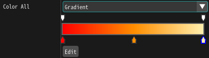
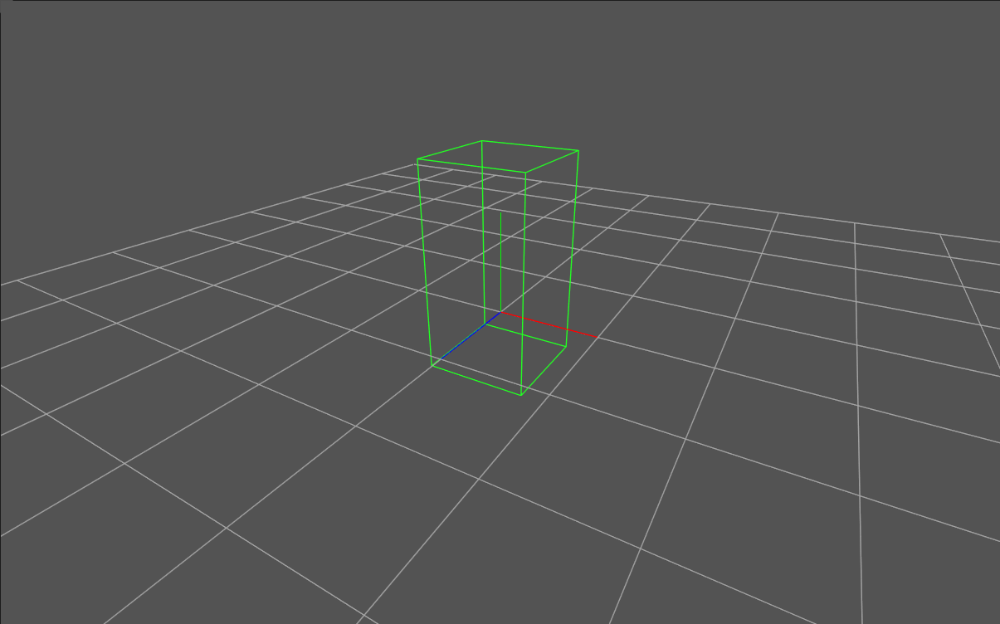
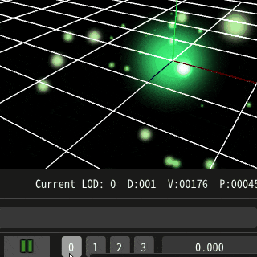

1.70 New Features¶
Common¶
Gradient¶
Added the ability to specify colors with gradients.
Level of Detail¶
Added the ability to change the behavior of particles based on distance to improve a performance of the effect. [by @abvadabra, #820]

Kill Rules¶
Added the ability to specify a range within which particles will be discarded if they enter or exit within the specified range. [by @abvadabra, #833]
Triggers¶
Added the ability to remove or start generating specific particles during effect playback.
Rotation¶
Added the ability to rotate particles so that they face the camera.
Ribbon, Track¶
Color Time¶
Added the ability to set the source of time to determine the color of ribbons and trajectories.
Materials¶
New nodes¶
Light, Noise, and Gradient nodes have been added.
Tools¶
Overdraw display¶
Added a display method that shows the number of drawings as a drawing method.

h264 recording¶
Added the ability to save recordings in h264 format. (Windows only)
Data Recovery¶
Added auto saving of project edited in Effekseer. In case of data loss project can be restored from auto saved files by going into Files > Recover
[by @abvadabra, #813]
Unity¶
Supported M1 Mac
UnrealEngine5¶
Supported UnrealEngine5
Other¶
Runtime: Particles generated at a small number of times will now interpolate their parent's position. For example, children of a fast-moving parent particle can now be generated at equal intervals.
Editor: Added ability to configure amount of digits after decimal point in editor [by @abvadabra, #812]
Editor: Added ability to use dynamic expressions for middle point of Easing component. [by @abvadabra, #816]
API: Added
Manager::SetSpawnDisabled(Handle, bool)function which allows to temporarily disable particles generation by effect instance [by @abvadabra, #808]OpenGL Renderer: Fixed incorrect reset of sampler objects [by @abvadabra, #815]
Other: Performance has been improved when pausing effects or when effects are off-screen.
Various other bugs have been fixed.